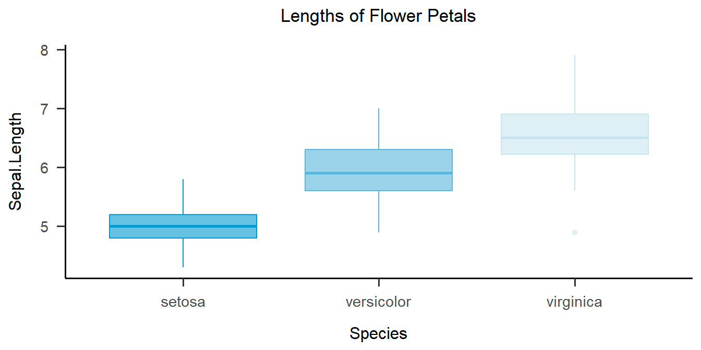

Chapter 8 Difference Statistics
In this chapter, you will learn how to conduct some of the most common statistical analyses in R. We will start with a re-cap of the statistics to get everyone on the same page, going over why the \(\chi^2\) test, t-test and ANOVA are all in the same chapter and when to use each. Then I want to mention some assumptions we have to check and lastly go over some examples fueled by students' ideas who attended my seminar that this work is based on.
8.1 Statistics Re-cap
Think about what do you remember from statistics and try to answer the two questions below:
- What is Chi\(^2\) / \(\chi^2\)?
- What is the t-test?
- What is an ANOVA?
What do they have in common?
They measure group differences
What differentiates them?
They are used for data of different scale levels

These three measures all provide us information on differences either between naturally occurring groups (e.g. people of different genders) or between experimentally manipulated sub-samples (e.g. treatment vs. control group in a medical drug trial).10
The \(\chi^2\) statistic is commonly used on nominal data, e.g. if you want to compare proportions. Usually, the \(\chi^2\) test is used with two binary variables, but it also works with more categories. Considering the setup with the drug trials, we could check whether women and men received the drug and the placebo equally often.
With the t-Test it gets a bit trickier since there is more than one variant: Depending on the situation you can use the one-sample, two-sample or paired-samples t-test. Generally speaking, you want to test one or two groups on a continuous attribute.
In the analysis of variance \(\rightarrow\) ANOVA you want to test three or more groups with one (or more) continuous attribute(s). I like to think of it as an augmentation of the t-test which takes into account some issues that we would face if we just used several t-tests in a setting with more than two groups (spoiler: It's called alpha-inflation and we do not want it).
This is a very basic overview of these tests, but it should give you a reminder if you have heard this before. I will go over the purposes again as we look at the coding examples below. If you think you might need a refresher on these stats that goes a little deeper, hop on over to the Stats Picker and to the Deep Dive tab. There you will find some more information on multivariate statistics and how to use them.
8.1.1 Pre-Requisites
If you have been following along with the structure of this book, you will know what an R project is and that you were asked to create a folder called "data" in the according project folder in order to make the following command work to load the seminar data. If you just want to access the tidily cleaned data directly, you can go to the GitHub page and download the datafile there. Alternatively, there is a direct way to include data from GitHub in your script as long as you are connected to the internet, which you can find commented out below:
seminar <- readRDS("./data/seminar_data.Rds")
# Access the data directly from GitHub
# seminar <- readRDS(gzcon(url("https://github.com/the-tave/psych_research_in_r/raw/main/data/seminar_data.Rds")))Next, we will add a so-called dummy-variable about believeing in the soul. It is not called "dummy" because we want to judge anybody's belief, but rather because it serves as a stand-in for a more complex variable, just like a test dummy is a stand-in for a real person.11
Here, we basically want to create a dummy variable for believing in the soul where we summarize all those who said they don't know or they definitely don't believe into one category that we can later contrast with all those who said they do believe. So in the new variable, 1 means yes and 0 means no or unsure.
8.1.2 Statistical Significnace
In parametric statistics (which is the most common/basic kind), we make our test decision based on the distribution of out given test statistic. This is because for any test statistic that we can calculate, we can make a prediction about its distribution if the true value were zero, i.e. no effect. We would expected most values to fall in a certain range and if we find an empirical value (based on our data) that falls beyond that range, we conclude that it is so unlikely to find a value that extreme if we actually assume that range to be surrounding the true value. We then conclude statistical significance because the empirical value of the test statistic is significantly different to the theoretical value distribution we would have if there were no true effect.
This measure of "how unlikely is our empirical value" is reflected in the p-value. Commonly, we accept a threshold of \(\alpha = .05\) as sufficiently unlikely. It means that we would theoretically expect a value that extreme or more extreme in only 5% of all cases.
8.2 \(\chi^2\)
The \(\chi^2\) Test for Independence determines if there is an association between two categorical variables in a contingency table. To do so, it compares the observed frequencies in each category of that contingency table to the frequencies expected if the variables were independent. For example, if there were no association (i.e. statistical independence) between gender and believing in the soul, then the proportion of men and women who believe in a soul should be about equal.
#
# 0 1 Sum
# man 1 1 2
# woman 6 5 11
# Sum 7 6 13The test statistic \(\chi^2\) is calculated as follows:
\[\chi^2 = \sum \frac{(O_i - E_i)^2}{E_i}\]
where - \(O_i\) is the observed frequency in each category - \(E_i\) is the expected frequency in each category, calculated as: \[E_i = \frac{(row \ total) \times (column \ total)}{grand \ total}\]
The distribution of \(\chi^2\) depends on the number of categories k or more precisely, the degrees of freedom, df. In a scenario where we have just one variable and we want to test empirical frequencies to expected ones, k is equal to the number of categories and df = k-1. If we have two variables and we want to test their association as described above, k is not really relevant here and we focus on the degrees of freedom, calculated as df = (#rows - 1)x(#columns - 1).

8.2.1 How to in R
In R, you calculated the \(Chi^2\) test using the function chisq.test(), which only needs (categorical!) x, y as input.
Here, we will look at the previous example of gender and soul belief and therefore add those two variables.
The function allows some other inputs as you can see in the example.
Especially with a small sample, we can add the input simulate.p.value = T, which bootstraps the analysis 2000 times to better estimate an accurate p-value.
8.2.2 Exercise
We want to explore whether belief in the soul (dummy) is associated with music preference.
Calculate a simple chisq.test and interpret the results.
chisq.test(seminar$v07_genre, seminar$soul_dummy)
# Warning in chisq.test(seminar$v07_genre, seminar$soul_dummy): Chi-squared approximation may be incorrect
#
# Pearson's Chi-squared test
#
# data: seminar$v07_genre and seminar$soul_dummy
# X-squared = 2.1357, df = 2, p-value = 0.3437
addmargins(table(seminar$v07_genre, seminar$soul_dummy))
#
# 0 1 Sum
# pop 2 3 5
# rock 3 3 6
# techno 2 0 2
# Sum 7 6 13How would you interpret this result?
8.3 t-Test
As I've mentioned before, there is not really the one t-test to rule them all. Instead, the t-statistic which the t-tests are built around is calculated slightly differently depending on the actual situation. There are three categories of t-test:
- one-sample t-test:
- Test one sample against a known mean value
- two-sample t-test (independent):
- Test two sample-means against each other (independent samples)
- paired two-sample t-test:
- Test two dependent sample-means against each other (e.g. repeated measures)
8.3.1 Test statistic t
The Test statistic T has a known distribution that depends on the degrees of freedom df, calculated as n-1. It is similar to what we saw with the \(\chi^2\) distribution but the t-distribution looks a lot more like the normal distribution. Most (probable or to be expected) T values are around 0, so te further away or more extreme the T value is from 0, the less likely it is caused by chance alone. \(\rightarrow\) significance

It is calculated as follows:
One sample: \[ t = \frac{\bar{X} - \mu}{\frac{s}{\sqrt{n}}} \]
Two sample: \[t = \frac{\bar{X}_1 - \bar{X}_2}{\sqrt{\frac{s_1^2}{n_1} + \frac{s_2^2}{n_2}}} \]
8.3.2 How to in R
- The basic function is
t.test()for any type of t.test - One sample needs inputs x, mu (if x is from a data set you should specify data)
- Two sample needs either
- x, y (if from data set, data) or
- x ~ group (if from data set, data)
- Paired test needs paired = T
- One-sided test needs alternative = 'greater' (assumes first group mean to be larger than second; otherwise "less")
8.3.3 Examples
One sided - "greater" assumes that mean(x) is larger than mean(y)
t.test(x = 10:20, y = 0:10, alternative = "greater")
#
# Welch Two Sample t-test
#
# data: 10:20 and 0:10
# t = 7.0711, df = 20, p-value = 3.713e-07
# alternative hypothesis: true difference in means is greater than 0
# 95 percent confidence interval:
# 7.56088 Inf
# sample estimates:
# mean of x mean of y
# 15 5Two sided using formula notation with the ~ tilde
Does seminar motivation differ depending on the soul-belief of students?
t.test(v10_motivation ~ soul_dummy, data = seminar)
#
# Welch Two Sample t-test
#
# data: v10_motivation by soul_dummy
# t = 0.1625, df = 6.833, p-value = 0.8756
# alternative hypothesis: true difference in means between group 0 and group 1 is not equal to 0
# 95 percent confidence interval:
# -31.14063 35.71206
# sample estimates:
# mean in group 0 mean in group 1
# 68.28571 66.000008.3.4 Exercise
We want to test whether the gender stereotype that men are more skilled with technology appears in our seminar sample.
Perform a one-sided two-sample t-test and interpret the results.
Hint: The grouping variable "v01_gender" is sorted alphabetically - so choose the "alternative" accordingly!
t.test(v05_skill_tech ~ v01_gender, data = seminar, alternative = "greater")
#
# Welch Two Sample t-test
#
# data: v05_skill_tech by v01_gender
# t = 0.38715, df = 1.2774, p-value = 0.3766
# alternative hypothesis: true difference in means between group man and group woman is greater than 0
# 95 percent confidence interval:
# -109.5565 Inf
# sample estimates:
# mean in group man mean in group woman
# 46.5 36.0How would you interpret this result?
8.4 ANOVA

Figure 8.1: ANOVA principle
- Like a t-test for more than two groups
- Why do we not just calculate several t-tests?
- \(\alpha\) inflation!
- Significance level of 0.05 means that 1/20 tests will be significant by pure chance, so more tests makes it more likely that we hit that chance and make an alpha error (falsely reject null hypothesis)
8.4.1 How to - theoretically
- Check Assumptions
- Data should be normally distribution & variance in groups should be similar (homogeneous)
- Sum of Squares: Sum of Squares total, within & between (R does this for us)
- F-fraction as the measure of variance explained by the grouping variable in comparison to other variability in the dependent variable
- Interpretation and post-hoc tests
- If there are any significant differences at all, we can use pairwise t-tests (with alpha correction!)
Example: Music genre and loudness
1. Check assumptions
- Check for Homogeneity of Variance with the Levene Test
# Make sure the package "car" is installed first! If not, install.packages("car") # as.factor() forces R to recognize our group as such! car::leveneTest(v08_loudness ~ as.factor(v07_genre), data = seminar, center = mean) # Levene's Test for Homogeneity of Variance (center = mean) # Df F value Pr(>F) # group 2 0.1729 0.8437 # 10- Interpretation?
- p value < 0.05 would indicate significant differences in variance between the group, so we want it to be > 0.05
- Assumption met!
2. Define the overall model
model <- aov(v08_loudness ~ as.factor(v07_genre), data = seminar)
summary(model) # "Pr(>F)" is the p-value
# Df Sum Sq Mean Sq F value Pr(>F)
# as.factor(v07_genre) 2 618.9 309.4 2.562 0.126
# Residuals 10 1208.0 120.8- Interpretation?
- Not significant (likely due to small sample size)
- usually we would stop here then, but we will look at the post hoc tests anyway ;)
3. Post Hoc Test
TukeyHSD(model)
# Tukey multiple comparisons of means
# 95% family-wise confidence level
#
# Fit: aov(formula = v08_loudness ~ as.factor(v07_genre), data = seminar)
#
# $`as.factor(v07_genre)`
# diff lwr upr p adj
# rock-pop 12.566667 -5.677791 30.81112 0.1922467
# techno-pop 17.400000 -7.808341 42.60834 0.1911143
# techno-rock 4.833333 -19.767489 29.43416 0.8544384- Interpretation?
- There are no significant pairwise differences in our (small) sample.
- But we can simulate a larger sample (for fun)
8.4.2 Addendum for demonstration only: Bootstrapped Data for larger sample size
data <- data.frame()
for(i in 1:10){
boot <- seminar[sample(1:nrow(seminar), nrow(seminar), replace = T), ]
data <- rbind(data, boot) # create many random samples from our data
}
bootstrapped_model <- aov(v08_loudness ~ as.factor(v07_genre), data = data)
summary(bootstrapped_model)
# Df Sum Sq Mean Sq F value Pr(>F)
# as.factor(v07_genre) 2 7345 3672 47.76 3.42e-16 ***
# Residuals 127 9766 77
# ---
# Signif. codes: 0 '***' 0.001 '**' 0.01 '*' 0.05 '.' 0.1 ' ' 1
TukeyHSD(bootstrapped_model)
# Tukey multiple comparisons of means
# 95% family-wise confidence level
#
# Fit: aov(formula = v08_loudness ~ as.factor(v07_genre), data = data)
#
# $`as.factor(v07_genre)`
# diff lwr upr p adj
# rock-pop 14.238278 10.307525 18.169030 0.0000000
# techno-pop 17.624242 11.977093 23.271392 0.0000000
# techno-rock 3.385965 -2.236703 9.008633 0.32956538.5 Reporting with the apa & papaja packages
- You know the
papajapackage already fortheme_apa()in data visualization - The package also has many wrapper functions to make reporting in R & R Markdown a lot easier
- "apa_print()"
- Chi\(^2\) Test reporting cannot be achieved with this, so we use apa::chisq_apa() for that
8.5.1 Usage
# Chi (add format = "rmarkdown" if needed)
apa::chisq_apa(chisq.test(seminar$v07_genre, seminar$soul_dummy))
# Warning in chisq.test(seminar$v07_genre, seminar$soul_dummy): Chi-squared approximation may be incorrect
# chi^2(2) = 2.14, p = .344
# t-test
papaja::apa_print(t.test(v05_skill_tech ~ v01_gender, data = seminar, alternative = "greater"))$full_result
# [1] "$\\Delta M = 10.50$, 95\\% CI $[-109.56, \\infty]$, $t(1.28) = 0.39$, $p = .377$"
# ANOVA
papaja::apa_print(model)$full_result |> suppressMessages()
# $as_factorv07_genre
# [1] "$F(2, 10) = 2.56$, $\\mathit{MSE} = 120.80$, $p = .126$, $\\hat{\\eta}^2_G = .339$"
# suppressMessages() is a useful helper function that avoids any messages from the function it is used with. Here it would just tell us "For one-way between subjects designs, generalized eta squared is equivalent to eta squared. Returning eta squared.""8.5.2 Usage in R Markdown
This presentation is based on R Markdown, so we can make use of the pretty printing options right here
By using
apa_print(model)$full_result, we can automatically report results inside our documents:"In our sample, ANOVA showed no significant differences between preferred music genre and preferred volume of listening to music (\(F(2, 10) = 2.56\), \(\mathit{MSE} = 120.80\), \(p = .126\), \(\hat{\eta}^2_G = .339\)). However, bootstrapping with 10 repetitions suggests that this lack of evidence might be due to the small sample size (\(F(2, 127) = 47.76\), \(\mathit{MSE} = 76.90\), \(p < .001\)), which is also supported by the large effect size (\(\hat{\eta}^2_G = .429\))."
Wrap-Up & Further Resources
- Chi\(^2\) test measures association between two categorical variables
- t Test measures differences between mean values (one sample, two sample, paired)
- ANOVA can be thought of as an augmentation of the t test while controlling alpha inflation
- Functions: chisq.test(), t.test(), aov()
- Always try to imagine/ keep in mind what you might expect and what the data would be like if that were true
- Read the documentation of each function for more options
- Statistics Picker
- Chi2-test (Statology)
- t-test (Statology)
- ANOVA (Statology)
- Discovering Statistics Using R (Field et al., 2012)

You will usually see the \(Chi^2\) test classified as an association statistic, which is technically more to the point. However, I like to think of it as quantifying differences between groups. After all, if you find systematic differences between groups in two given measures, that must mean that those measures are not independent, i.e. associated with each other.
For more in-depth information on dummy variables you can visit: https://stats.oarc.ucla.edu/wp-content/uploads/2016/02/p046.pdf.